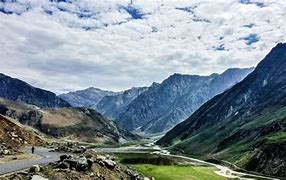

-
Pangong tso
Pangong Tso is a long narrow, deep, endorheic (landlocked) lake situated at a height of more than 14,000 ft in the Ladakh Himalayas.The Line of Actual Control (LAC) - the line that separates Indian and Chinese troops since 1962

-
Nubera Valley
The Nubra Valley is located in the northernmost part of Ladakh, at an altitude of just over 3,000 meters (about 10,000 feet) above sea level. It lies between the mighty Karakoram and Ladakh mountain ranges, about 150 kilometers (93 miles) north of Leh across the Khardung La mountain pass.

-
Tso Moriri
As per a classification of the Himalayan Lakes done on the basis of their origin, there are four groups and Tso Moriri falls under the third group of "remnant lakes".

-
Magnetic Hill
The Magnetic Hill is an example of a gravity hill, a type of optical illusion created by rising and descending terrain. It is located at the northwestern edge of the city of Moncton in the Canadian province of New Brunswick..

-
Kargil
Kargil is a city and a joint capital of the union territory of Ladakh, India.It is the second-largest city in Ladakh after Leh. It is on the bank of the Suru River near its confluence with the Wakha Rong river, the latter providing the most accessible route to Leh.

-
Zanskar
Zanskar constitutes a high altitude semi-desert lying on the Northern flank of the Great Himalayan Range. That mountain range acts as a climatic barrier protecting Ladakh. The first traces of human activity in Zanskar seem to go back as far as the Bronze Age.